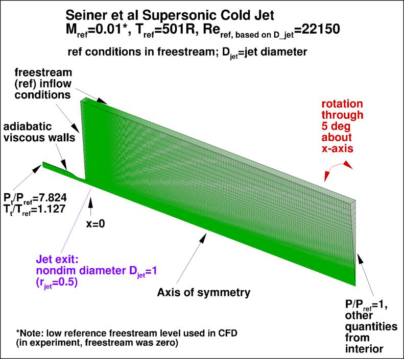
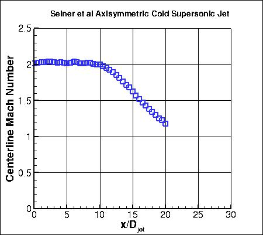
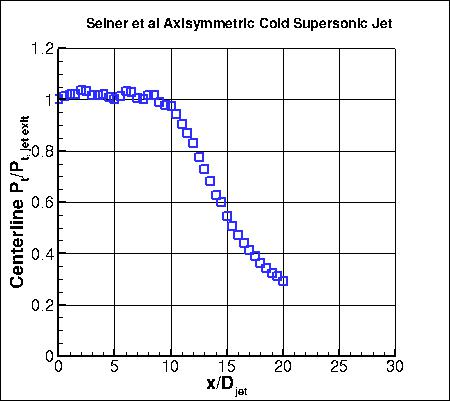
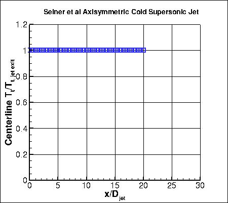

Public Access (formerly Langley Research Center)Turbulence Modeling Resource |
Return to: Turbulence Modeling Resource Home Page
ACSSJ: Axisymmetric Cold Supersonic Jet
See the related
axisymmetric hot supersonic jet case.
The purpose here is to provide a
validation case for turbulence models. Unlike verification, which seeks to
establish that a model has been implemented correctly, validation compares
CFD results against data in an effort to establish a model's ability to
reproduce physics. A small sequence of nested grids of the same family are
provided here if desired. Data are also provided for comparison. For this
particular supersonic cold jet case, the data are from experiment.
The experiment involved a jet with diameter 9.144 cm.
The jet was run with a fully-expanded plume Mach number of M=2.0.
In the experiment, the axisymmetric jet exits into quiescent (non-moving) air. However, because flow into
quiescent air is difficult to achieve for some CFD codes, here the CFD is computed with a low
background ambient conditions
(Mref=0.01, moving left-to-right, in the same direction as the jet).
This boundary condition difference probably has some effect, but testing for a related
"cold" subsonic jet
has indicated that the influence is
relatively small.
The Reynolds number and reference static temperature used in the CFD are estimated based on the available
experimental data.
The appropriate jet conditions are achieved by setting total pressure and temperature at
the inflow face within the jet, as shown in the figure below.
It is important to note that this axisymmetric case is not a 2-D computation; it uses a
periodic (rotated) grid system with appropriate boundary conditions on the periodic sides of the grid.

The experiment yielded measured quantities along the centerline downstream of the jet.
The experimental data reference is:
Note, however, that the data was obtained independently of the paper referenced above, so there are some minor differences in
the test conditions.



The experimental data shown above are provided here:
The broader set of Seiner data for round Mach 2.0 jets are provided here:
Note: In the cases for Tt=104 F (563.67 R) through 1550 F = 2009.67 R, Ps is assumed to be a constant value equal
to the ambient static pressure (per this data supplied by Jack Seiner). For the data listed corresponding to the
hottest test case (Tt = 2000F = 2459.67), the static pressure is shown to vary (for locations up to x/D = 17.5) and
was measured using a novel static pressure probe discussed in Lagen and Seiner, NASA TM-102612, 1990,
https://ntrs.nasa.gov/citations/19900016329. Beyond x/D = 17.5,
the static pressure is shown to be constant for this case. It has always been extremely difficult to simultaneously
measure (same spatial location) static and total pressures. This is especially the case in a jet potential core with
even small compression and expansion waves. Assuming constant static pressure would likely lead to errors in some
of the other derived quantities. Beyond the end of the potential core, the constant static pressure assumption
may not be too erroneous. For further discussion, please see AIAA-2021-0596,
https://doi.org/10.2514/6.2021-0596.
What to Expect:
(Other turbulence model results may be added in the future.)
Return to: Turbulence Modeling Resource Home Page
Recent significant updates:
RESULTS
LINK TO EQUATIONS
MRR Level
SA
SA eqns
4
03/02/2021 - posted broader set of Seiner data for round Mach 2.0 jets
10/31/2018 - minor revision of BC figure to mention adiabatic
Page Curators: Christopher Rumsey,
Ethan Vogel,
Clark Pederson
Last Updated: 11/18/2021